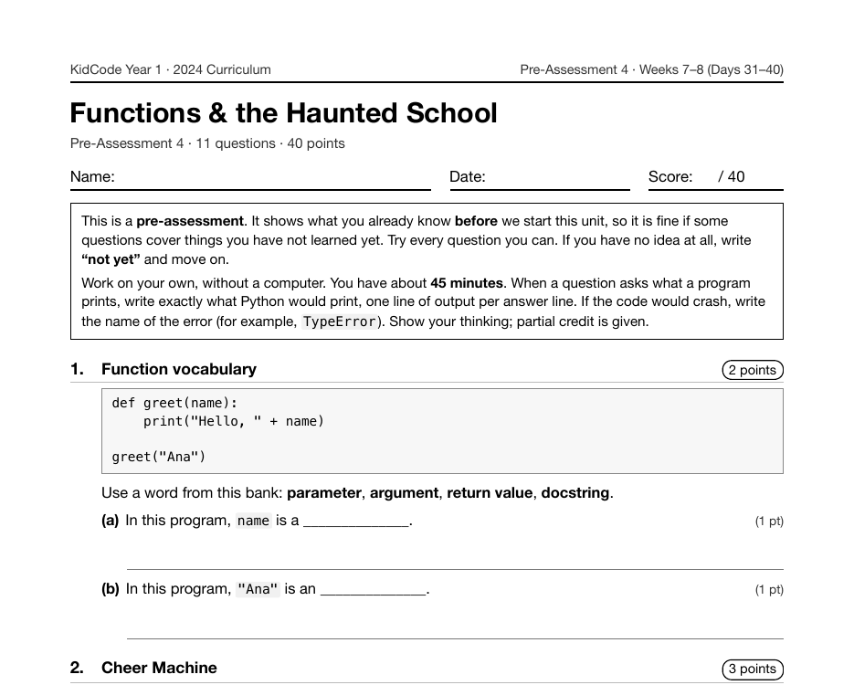

Project 6: Escape the Haunted School
Escape the Haunted School is the Year 1 capstone, Project 6. It runs across Days 36 to 39: planning the map on paper, storing rooms in a dictionary, a game loop with go north-style commands, an inventory, locked doors, and a win condition, followed by a day of peer playtesting.
What I taught that week
From the Year 1 curriculum, Week 8: Capstone & Showcase
Day 36: Capstone I: Haunted School Plan. Project 6. Planning a text adventure called "Escape the Haunted School": sketching the map, listing rooms, items, and win and lose conditions, and drawing a flowchart of the game loop.
Day 37: Capstone II: Rooms & Movement. Storing rooms in a dictionary, moving with go north commands, and writing the while game loop. Handling unknown commands politely, with a helper function for each action.
Day 38: Capstone III: Items & Inventory. Adding an inventory list, take and use commands, locked doors, and a win condition. Testing each feature as it is added and keeping a bug list.
Day 39: Playtest & Polish. Peer playtesting with "Two Stars and a Wish" feedback cards, bug fixing, and adding room descriptions and ASCII art. Stretch goals: health points and a secret ending.
Day 40: Showcase Day & Year Review. Presenting games to classmates and guests. A "Python Trivia" review relay of Weeks 1 to 8, a skills checklist, and a preview of Year 2: files, classes, and libraries.
What students built
18 students finished the capstone. Every one has an inventory and at least one locked door, and the median game defines 5 functions, one per action. At a median of 129.5 lines, the capstone is by far the longest Year 1 program, more than twice the next longest. It is also where most Year 1 function definitions live: only 13% of all Year 1 programs define a function, and every one of them is a capstone.
One student's program
This is one real submission, shown as the student wrote it apart from the removed name header. It was chosen by a fixed rule rather than for being the best: it is the submission closest to the project's median length among those that ran cleanly and contain nothing that could identify anyone. Parts are skipped where marked with …
locked = {"dark_gym": 'lantern', "playground_gate": 'silver key'}
inventory = []
current = "kindergarten_hall"
score = 0
visited = ["kindergarten_hall"]
def show_room(room):
print()
print("== " + rooms[room]["name"] + " ==")
print(rooms[room]["desc"])
if rooms[room]["item"] is not None:
print("You spot: " + rooms[room]["item"])
print("Exits: " + ", ".join(rooms[room]["exits"]))
def move(room, direction):
exits = rooms[room]["exits"]
if direction not in exits:
print("You bump into a wall. You can't go that way.")
return room
target = exits[direction]
if target in locked:
print(f"The way {direction} is locked. Maybe the {locked[target]} would help?")
return room
return target
def take_item(room):
item = rooms[room]["item"]
if item is None:
print("There is nothing here to take.")
return False
inventory.append(item)
rooms[room]["item"] = None
print(f"You picked up the {item}.")
return True
def use_item(room, item):
if item not in inventory:
print(f"You don't have a {item}.")
return
for direction in rooms[room]["exits"]:
target = rooms[room]["exits"][direction]
if target in locked and locked[target] == item:
del locked[target]
print(f"You use the {item}. The way {direction} clicks open!")
return
print("Nothing happens.")
def show_inventory():
if len(inventory) == 0:
print("Your backpack is empty.")
else:
print("You are carrying: " + ", ".join(inventory))
A sample run of that program (the input was typed for this page)
Nap time went on way too long. Everyone else has vanished! Type help to see commands. == Kindergarten Hall == Tiny coat hooks line the wall and a music box plays alone. Exits: north, east, south > look == Kindergarten Hall == Tiny coat hooks line the wall and a music box plays alone. Exits: north, east, south > go north … Exits: south, east > use lantern You use the lantern. The way east clicks open! > go east == Dark Gym == Basketballs bounce slowly in the shadows. Exits: west, north > use silver key You use the silver key. The way north clicks open! > go north == Playground Gate == The rusty gate leads out to the street. Exits: south The gate swings open and you run home. You are FREE! Final score: 90 Rating: Ghost Buster
The worksheet for this unit
Each unit has a pre- and post-assessment written from the same curriculum. This is the first page of the pre-assessment for the unit this project sits in: Functions & the Haunted School (Weeks 7–8 (Days 31–40), 11 questions).

Where it fits
Functions become the default in Year 2: every Year 2 program defines at least one. The rooms dictionary is also the ancestor of the classes in Virtual Pet Care and Monster Battle Arena.
Looking back
The capstone pulls together dictionaries, lists, loops, conditionals and functions in one file. It works as an end-of-year check because a student can't fake any one of those pieces: if move() doesn't respect locked doors, the game can be won without the key.